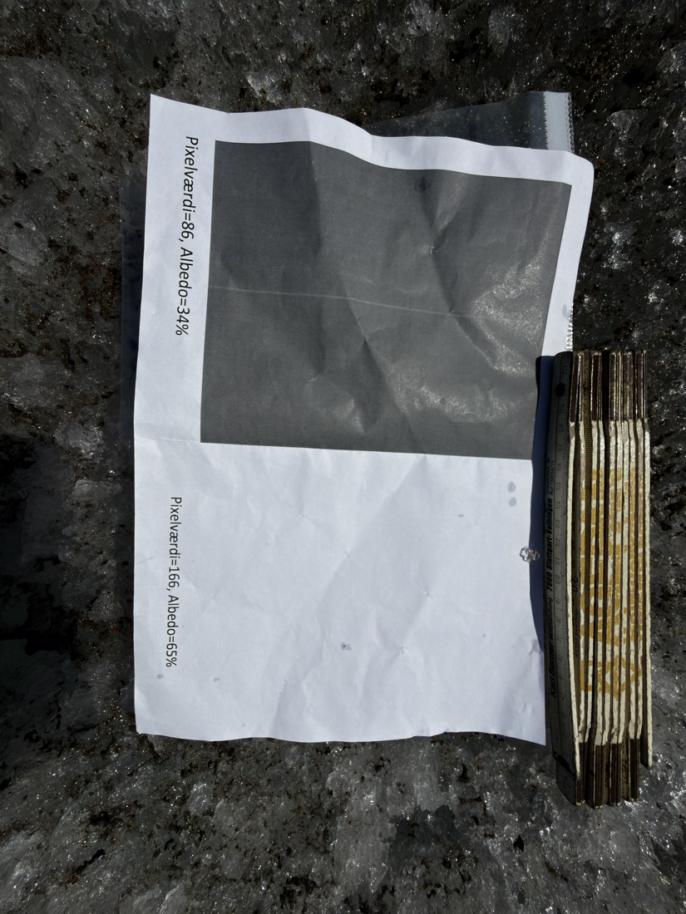

- Casen: to felter på en grønlandsk gletsjer, 20 og 40 cm smeltning på seks døgn. Forskellen er albedo.
- Trin 1: eleverne måler albedo i skolegården med telefon, referencekort og app.
- Trin 2: de slår de samme steder op i satellitkortet — og opdager, at græsset snyder, og at satellitten ser mere end deres flade.
- Trin 3: de regner gletsjerens smeltning efter med en simpel energimodel.
Elevarket er kerneforløbet (del 1–3) for alle. Udvidelsen til B- og A-niveau ligger på sin egen side. Eleverne bruger den bærbare til forløbsside, elevark og satellitkort — og mobilen til appen. Forløbet kan bruges i både naturgeografi og fysik.
Før timen
- Print referencekortet — ét pr. gruppe, mat papir, 100 % skalering, tonerbesparelse slået fra. Det sorte felt skal være helt sort.
- Find to store flader på mindst 40 × 40 meter: én med asfalt, én med græs. Tjek dem i satellitkortet på forhånd: et klik på fladen skal kalde omgivelserne ensartede.
- Tjek, at der findes et skyfrit satellitbillede. Opslaget viser datoen for det nyeste skyfri billede. Driller vejret, så åbn «Flere værktøjer» i satellitkortet og vælg «Seneste sommer» — asfalt ændrer sig ikke med årstiden, men det gør græs.
- Vejret: jævnt overskyet er bedst. Lav sol giver lange skygger, og våde flader spejler lyset.
- Roller i gruppen: en fotograf (mobil), en skriver (måleskema) og en kortlæser (satellitkortet på den bærbare). Åbn elevark og satellitkort i to faner, før I går ud.
Tidsplan
Ét modul (75 min) — kerneforløbet
| Tid | Hvad | Hvor i materialet |
|---|---|---|
| 0–10 | Casen og videoen på lærred, «Hvad er albedo?» og «Gæt først» | Forløbssiden · elevark del 1 |
| 10–35 | Ude: asfalt og græs, tre målinger af hver | Del 1, trin 1–5 |
| 35–50 | Fotos ind i appen, tal i måleskemaet | Måleskema |
| 50–65 | Satellitkortet på den bærbare: søg skolen, klik på de to flader | Del 2, opgave 2 |
| 65–75 | Opsamling: klassens tal på tavlen — hvem har ret? Åbn folden sammen. | «Åbn, når I har jeres egne tal» |
To moduler
Modul 1 som ovenfor. Modul 2: del 3 (tilbage til gletsjeren), udvidelsen og eventuelt opgaven «Mål gletsjeren med jeres eget værktøj» sidst på forløbssiden. Opgave 1b (tør og våd asfalt) passer godt som start på modul 2 — den kræver kun en spand vand.
Når det går galt
- Appen advarer om overeksponering — det hvide felt er brændt ud. Tag billedet igen, gerne i skygge eller med lavere eksponering.
- Albedo over 1 eller helt urimelige tal — felterne er markeret i forkert rækkefølge (sort først), eller der ligger skygge over kortet.
- Blankt papir eller gråt sort felt — print igen på mat papir uden tonerbesparelse.
- Satellitkortet siger «Ingen måling her» — ingen skyfri optagelse i perioden. Åbn «Flere værktøjer», og vælg en længere periode eller hæv «Max sky %».
- Lav sol og lange skygger — stil jer, så skyggen falder væk fra referencekortet, eller mål i skygge eller under skyer. Kort og flade skal bare have samme lys.
- Våde flader — fotografér lodret ned, så solen ikke spejler sig i fladen.
Resten — fold ud efter behov
Facit og forventede svar
Opgave 1
a) Den mørkeste tørre flade — typisk asfalt. Mange grupper måler dog græsset som lige så mørkt eller mørkere. Det er pointen, ikke en fejl — gem forklaringen til folden.
b) Våd asfalt er tydeligt mørkere end tør — regn med et fald på omkring en tredjedel. Vand på overfladen gør, at mere lys fanges i stedet for at blive spredt tilbage. Samme mekanisme gør våd is mørkere end tør.
Opgave 2
Asfalt: elever og satellit er typisk enige inden for ca. 0,05. Græs: telefonen giver 0,03–0,08, satellitten 0,16–0,25. Blandet hjørne: satellitkortet kalder fladen blandet, og tallet ligger mellem de flader, den ser.
d) To grunde: græs kaster meget infrarødt lys tilbage, som telefonen ikke ser, så dets rigtige albedo er højere, end det ser ud. Og planter bruger energi på at fordampe vand.
Opgave 3
a) Det lyse felt beholder 1 − 0,58 = 0,42, det mørke 1 − 0,11 = 0,89. Forholdet er ca. 2 — som 40 cm mod 20 cm.
b) Albedo 0,58: 266 · 0,42 · 518 400 = 57,9 MJ/m² → 173 kg/m² → 19 cm. Albedo 0,11: 266 · 0,89 · 518 400 = 122,7 MJ/m² → 367 kg/m² → 41 cm. Målt: 20 og 40 cm.
Udvidelse 1–4
1) Albedo 0,27 giver 33–34 cm, cirka 74 % mere end det lyse felt.
2) Græs absorberer 80 %, asfalt 88 %. Telefonen ser kun synligt lys. Græssets ekstra trick er fordampning. Samlet: byer med meget asfalt bliver varmere — varmeø-effekten.
3) Forskerne på gletsjeren ramte den blandede pixel: de målte i randzonen.
4) På ujævne flader giver det mest spredning at flytte referencekortet. Appens albedo holder ved forskellig eksponering, indtil det hvide felt bliver overeksponeret — så advarer appen, og tallene bliver for høje.
Udvidelse 5 (A-niveau)
a) Med 308 W/m²: 22 cm og 47 cm. b) Der mangler ca. 13 W/m² (lyst felt) og 42 W/m² (mørkt felt).
c) Netto langbølget: 276 − 316 = −40 W/m². Varme fra luften: +20 til +30 W/m² (et overslag med vind 2 m/s og 5 °C varmere luft giver ca. 27 W/m²). Sum: −10 til −20 W/m².
d) Det passer fint for det lyse felt. For det mørke felt mangler der mere — en albedo omkring 0,20 i stedet for 0,11 ville få regnestykket til at gå op. Det mørke felts albedo er den mest usikre måling i hele forsøget.
e) De 266 W/m² er solindstrålingen minus nettotabet fra de led, modellen udelader. At en så simpel model rammer, skyldes, at de to største udeladte led har modsat fortegn.
Faglige mål (forslag)
Forslag — ret formuleringerne til efter jeres læreplan og studieplan.
| Naturgeografi | Fysik |
|---|---|
| Albedo og strålingsbalance; is-albedo-feedback og Grønlands massetab | Energi og effekt; smeltevarme; absorberet og reflekteret stråling |
| Satellitdata og remote sensing: pixel, bånd, blandet pixel | Det elektromagnetiske spektrum: synligt og infrarødt lys |
| Feltmåling, databehandling og kildekritik af egne data | Måleusikkerhed; modeller og deres begrænsninger |
Niveaudeling: C, B og A
| Niveau | Hvad | Hvordan |
|---|---|---|
| C | Kerneforløbet, del 1–3 | Kvalitative forklaringer. Opgave 3 kan regnes i fællesskab på tavlen. |
| B | Kernen + udvidelse 1–4 | Absorberet andel i tal, spektral forskel over for blandet pixel, usikkerhed som ± og et lille forsøg om spredning. |
| A | Alt + udvidelse 5 | Energibalancen med vejrstationens data, modelkritik — og afsnittet «Hvor præcis er metoden?» nedenfor som diskussionsoplæg. |
Hvor præcis er metoden? — baggrund og diskussionsoplæg til A-niveau
Metoden er god til at sammenligne flader. De absolutte tal skal tages med forbehold — regn med ± 0,03–0,05 under gode forhold. Fire ting er værd at kende:
1 · Telefonen ser kun synligt lys
Satellittens albedo tæller det infrarøde med, og det er omkring halvdelen af solens energi. For asfalt og beton betyder det lidt. For græs er forskellen en faktor tre eller mere, og for sne og is går den den anden vej.
2 · Kameraet gemmer ikke lys lineært

Det første kort blev lavet ud fra albedo = pixelværdi / 255. Det holder
ikke: billedfiler er gamma-kodede, så en pixelværdi på 86 svarer til omkring 9 % af
papirets lysstyrke, ikke 34 %. I fotoet her måler det grå felt gråværdi 79 og det
hvide 201. Tager man forholdet direkte, bliver det grå felt 26–29 %. Regner man
tonekurven med, bliver det omkring 10 % — og det er også, hvad øjet siger.
Det «hvide felt på 65 %» var desuden bart papir, og i flere feltfotos var det overeksponeret. Derfor er kortet lavet om til ét sort felt (5 %) og bart hvidt papir (75 %), og appen kalibrerer gennem begge felter, så kameraets tonekurve og eksponering falder ud af regnestykket.
Tallene fra Grønland er målt med det gamle kort og den gamle app. At de lander 15 % fra satellitten, er til dels held — det er en god diskussion til A-niveau.
3 · Lav sol og ru flader
Et foto lodret ned måler lyset i én retning. Albedo er lyset i alle retninger. For ru flader i lav sol — is om morgenen, en pløjemark i november — ser fladen mørkere ud ovenfra, end dens albedo er, fordi kameraet ser ned i skyggerne mellem ujævnhederne.
4 · Satellittens tal er også en model
Sentinel-2 måler reflektans i bånd, og albedoen beregnes med en empirisk formel (Liang 2001) ud fra bånd på 10 og 20 meter. Atmosfærekorrektionen antager, at fladen spreder lyset lige meget i alle retninger, og satellitten ser den kun fra én vinkel. Det er et godt tal — men ikke et facit.